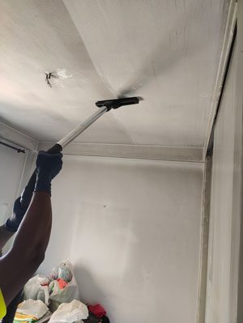

Introducción
Los incendios, además de causar daños estructurales, dejan tras de sí un rastro de hollín y manchas de humo, especialmente en techos y paredes. La limpieza efectiva de estos residuos es crucial para restaurar la seguridad y estética del espacio afectado. Este artículo ofrece una guía detallada sobre cómo abordar estas manchas difíciles, destacando métodos innovadores como la limpieza láser, y proporcionando recomendaciones para garantizar resultados óptimos.
¿Por Qué es Importante la Limpieza Post-Incendio?
Prevención de daños adicionales
El hollín y el humo pueden corroer y manchar permanentemente las superficies si no se tratan adecuadamente.
Salud y seguridad
Eliminar residuos tóxicos es esencial para evitar problemas de salud relacionados con la calidad del aire.

Restauración estética
Una limpieza profunda ayuda a devolver la apariencia original del espacio.
Métodos de Limpieza de Techos Post-Incendio
Limpieza Convencional
Descripción:
Incluye el uso de productos químicos y técnicas de fregado para eliminar el hollín y las manchas de humo.
Pros y Contras:
- Pros: Accesibilidad y familiaridad con el método.
- Contras: Puede ser laborioso y menos efectivo en manchas persistentes.
Limpieza Láser
Descripción:
Utiliza tecnología láser para desintegrar y remover partículas de hollín sin contacto directo con la superficie.
Pros y Contras:
- Pros: Eficaz en la eliminación de manchas difíciles sin dañar la superficie.
- Contras: Requiere equipo especializado y puede ser más costoso.
Pasos para una Limpieza Efectiva de Techos
- Evaluación del Daño: Inspecciona el área afectada para determinar el alcance y el mejor método de limpieza.
- Preparación del Área: Cubre muebles y suelos para protegerlos durante el proceso de limpieza.
- Selección del Método de Limpieza: Basado en la evaluación, elige entre limpieza convencional o láser.
- Aplicación del Método de Limpieza: Realiza la limpieza siguiendo las mejores prácticas para cada método.
- Ventilación y Secado: Asegura una ventilación adecuada para eliminar olores y acelerar el secado.
- Inspección Final y Retoques: Evalúa la necesidad de retoques y realiza una limpieza final para asegurar la eliminación completa de manchas.
Preguntas Frecuentes
¿Es seguro limpiar techos con hollín por mí mismo?
Es seguro para manchas leves, pero para daños mayores se recomienda contratar a profesionales.
¿Cuánto tiempo debo esperar para limpiar después de un incendio?
Es importante comenzar la limpieza lo antes posible para evitar daños adicionales.
¿La limpieza láser es adecuada para todos los tipos de techos?
La limpieza láser es versátil, pero su idoneidad depende del material del techo y el grado de daño.
Conclusión
La limpieza de techos después de un incendio es una tarea crucial para restaurar la estética y garantizar un ambiente seguro. Con las técnicas adecuadas, como la limpieza convencional y la limpieza láser, es posible eliminar efectivamente las manchas de hollín y humo. Considera la gravedad del daño y el tipo de superficie antes de elegir el método más adecuado, y no dudes en consultar a profesionales si el daño es extenso.